Unpublished draft. Proposed periods need approval. SPEC-SEI-003 is retained in the archive and remains the selected Confluence source.
Customer Offboarding Logical Feature Specification
Solution Summary · Sequence and Reuse Assessment · Feature folder
Revision overview
This separate draft develops the logical view of SPEC-SEI-003. It expands Sage/external private-platform scenarios, cutoff behaviour, support/access periods and export recovery. The predecessor remains unchanged and selected for stable Confluence page 923861391.
OFF-01–08, OFF-I01–08, OFF-R01–10 and OFF-A01–11 keep their original meanings. New OFF-R11–16 and OFF-A12–25 add detail to the draft PRD. OFF-Q01–06 identify unresolved decisions in SPEC-SEI-031. Numeric periods are proposals requiring a product decision. The detailed interaction/data records remain in SPEC-SEI-003 Part 3; new implementation placement is outside this view.
Terminology follows the shared glossary. An authenticated caller still needs authority for the represented business and requested action. A transport acknowledgement does not prove completed disconnection, handover or reporting.
1 Scope, actors and observable outcomes
The customer administrator or authorised delegate requests a defined entity, environment, direction and service scope. The old and destination operators supply evidence for their own actions. Operations owns unresolved work; Legal/Tax qualifies continuing duties; Records/Privacy controls disposition; Security controls credentials. REF-PRODUCT.
2 State, invariants and workflow
Retain the predecessor's case stages: REQUESTED, INVENTORY, DESTINATION_READY, CUTOVER_PENDING, CUTOVER_OBSERVED, HISTORICAL_CONTINUITY, RELEASE_PENDING, DISPOSITION_PENDING, COMPLETE, BLOCKED, OUTCOME_UNKNOWN, CANCELLED. These are proposed internal states. They are not provider values.
Track route, registration, credentials, subscription, export and retained-data obligations separately. COMPLETE requires resolved or evidenced handover of historical work and assigned, owned disposition schedules. Future scheduled retention/deletion may continue after case closure only with a durable owner, due date, evidence and reopen/escalation path. Case closure does not assert that every retained record has already been deleted. REF-PRODUCT OFR7/8/13.
The authoritative invariant statements remain OFF-I01–08: scope/authority, destination isolation, inbound continuity, invoice origin, unknown outcomes, separate release, historical ownership and factual evidence. The following activities apply those rules.

Editable Draw.io · PNG. The diagram explains OFF-08's reconciliation decision. An urgent security action uses incident authority and records the unavailable historical path rather than claiming continuity that cannot be delivered.
3 What stops at cutoff?
Use one evidenced cutoff per entity/direction/scope, with timestamp, time zone, route version and the agreed business boundary. Invoice issue date, scheduled termination date and request-arrival time alone do not establish which provider already owns an operation. REF-PRODUCT OFR5/6; proposed detail under OFF-R11.
If destination state becomes uncertain during propagation, stop only the unsafe work and open OFF-08. An available last safe route may continue only where the observed provider state, mandate and country rules permit it. No automatic switch back follows.
4 Support, access and expiry controls
Exit statement
Before authorisation, the customer and Operations must see current and destination operators; selected entities/directions; requested and observed cutoff; commercial end date; each remaining action/channel; support hours and response/escalation terms; support end/review date; archive custodian and copy-request channel; export scope/readiness/expiry; fees or contractual limits; provider notice requirements; and the next action/owner for unresolved items. Dates must name their start event and time zone. OFF-R09/12.
Proposed planning periods
These are candidates for OFF-Q01 and PRD-SEI-243, not approved requirements or existing service levels.
OFF-R12 requires a recorded decision before any of these durations becomes a customer promise. OFF-Q01 must also decide reminder timings, support response targets, charges and the authority for extensions. Do not infer those terms from the candidate periods.
When a period expires
The copy-right baseline is four years from each invoice's issue under Article 2 bis.3, subject to applicability. It is not measured from offboarding. Legal must confirm responsible parties, effectivity and the delivery channel. REF-COPY; OFF-Q03. Do not substitute that period for a data-class retention schedule.
5 Export and evidence handover
Scope and package
An authorised customer must be able to obtain the agreed evidence under OFR12. Agree the package before cutoff. For product-only cancellation or a partial exit, a verified continuing archive can avoid an unnecessary bulk transfer, but the customer must still have the permitted export/copy path. Record whether delivery is to the customer, an authorised destination or an accepted archive custodian. REF-PRODUCT; OFF-R13.
Never include private keys, bearer tokens or reusable credentials. Apply tenant/entity/delegate isolation and minimise unrelated personal data. Returning personal data under a processor contract and exporting invoice evidence are separately qualified obligations. REF-PRIVACY; OFF-R14.
Delivery, later additions and recovery
Exact output schema, size limits, secure delivery method and destination import support are OFF-Q05, not invented API contracts. A public-platform download can contribute records but cannot substitute for this complete assessment. REF-SPFE/REF-CATALOGUE.
6 Requirements and operational controls
OFF-R01–10 remain authoritative in SPEC-SEI-003 Part 2 section 3. They cover authority, inventory, destination, cutoff/origin, historical work, independent release, reconciliation, concurrency, visibility and recovery. New detail below references the same draft product requirements; it does not approve the support proposals.
Every material decision/mutation retains actor, represented business, scope, original operation, expected/actual version, time, observed evidence, approval and next action. Track unknown-result age, late old-route invoices, approaching obligation dates, export omissions and residual access. Targets and response hours need Product/Operations approval; guide observation windows are not support or retention commitments.
7 Assurance and traceability
The original OFF-A01–11 matrix remains required coverage. It covers outbound-only, unproven inbound, unknown delivery, late duties, withdrawal timeout, concurrency, full export, reversal, outage, country isolation and platform change versus full exit. The additional scenarios below are acceptance definitions, not executed implementation tests.
Production needs approved OFF-Q01–06 decisions, qualified contracts, safe partial/full-exit drills, a staffed runbook, accepted customer wording and evidence that post-cancellation access works. Document validation only checks this review set; it cannot close those gates.
REF Source references
The Spain evidence guide remains the public source baseline. Read the original file for each claimed behaviour. The English extracts aid reading; their presence does not prove implementation or mapping coverage.